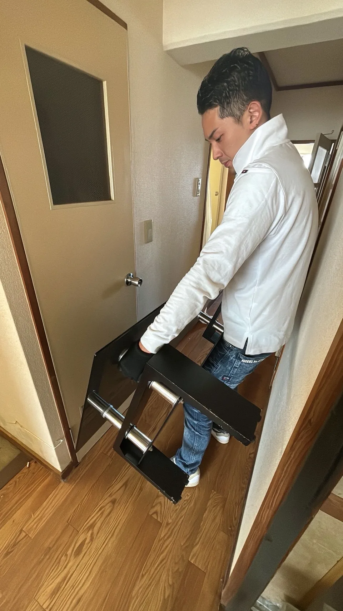
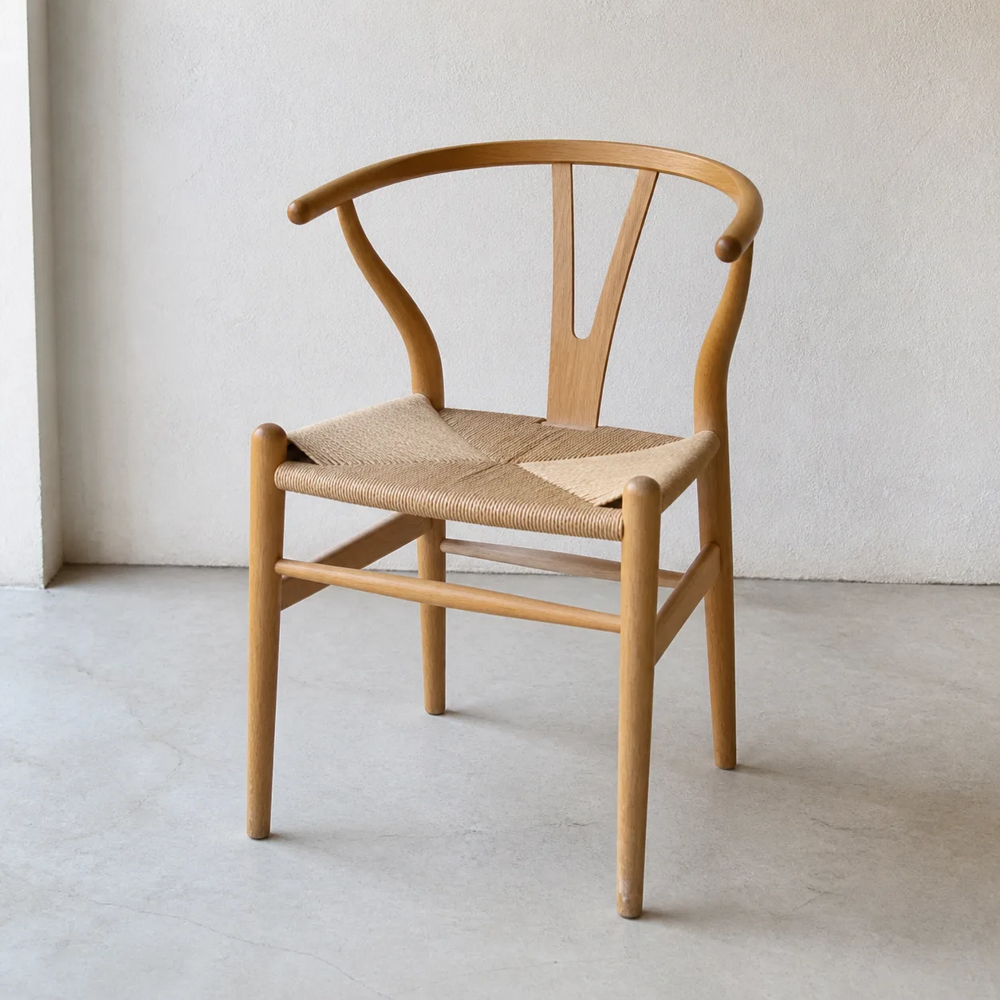
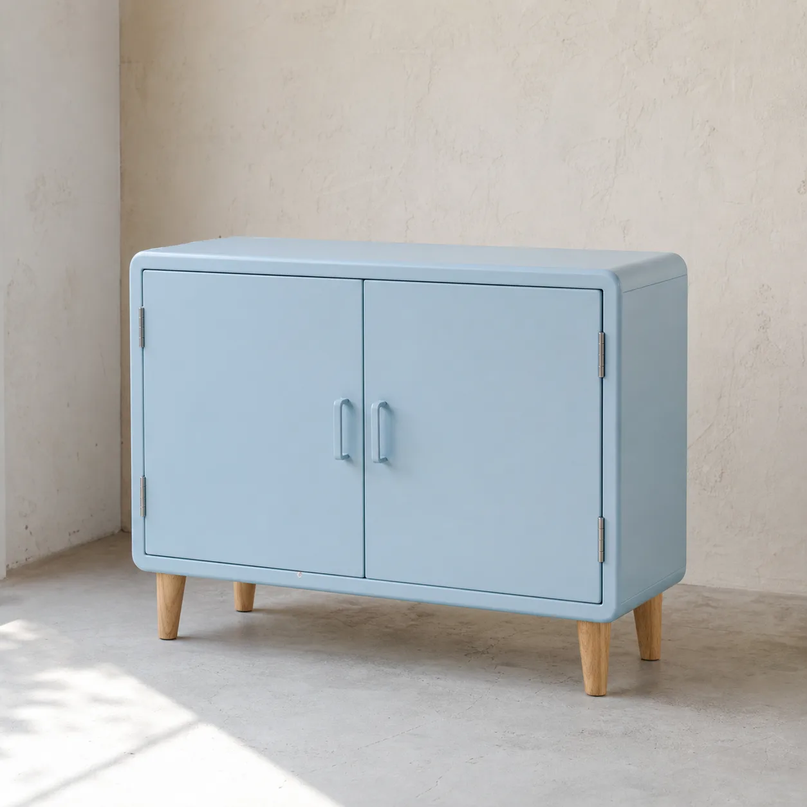

神戸市〜
姫路市主に明石市〜
高砂市写真から概算
見積もり
一つずつ、
次へつなぐ。
片付けの先にある、これからの暮らしのために。明石市を中心に、遺品整理・不用品回収からリユース販売・オークション代行まで、丁寧に対応いたします。

実作業写真ご遺族の想いに寄り添いながら、一つひとつ丁寧に整理いたします。ご家庭の不用品回収も、大きな家具から家電まで対応。写真または現地確認後に正式なお見積もりをご案内します。
回収を相談する →
イメージまだ使える家具や家電を、次の使い手へ。販売中の商品は一覧からご覧いただけます。
販売品を見る →
イメージ品物の価値を確認し、出品から販売までお手伝いします。成立時の手数料は販売額の70％です。詳細はご相談ください。
代行を相談する →この街で、
また、誰かの
役に立つものへ。
片付けられたものが、リユースを通して次の持ち主のもとで生かされる。そんな循環を、明石から広げていきたいと考えています。
PRICE
回収料金の目安
写真または現地確認後に正式なお見積もりをご案内します。
軽トラ1台積み放題少量の片付けに
目安15,000円〜
階段作業・大型家具が多い場合搬出条件が
ある場合に
目安25,000円〜
2トン箱車積み放題まとまった量の
回収に
目安60,000円〜
大量回収・家丸ごと片付け一軒分の整理に
目安80,000円〜
- 01
- 02
見積もりを確認
物量と搬出条件を確認し、費用をご案内します。ご納得いただいてから日程を決めます。
- 03
整理・搬出
建物や周囲に気を配り、一点ずつ運び出します。最後に作業内容をご確認いただきます。
FAQ
よくあるご質問
写真だけで見積もりできますか？
写真で概算見積もりをご相談いただけます。品物全体と搬出条件をお知らせください。状況によって現地確認をご案内します。
階段や大型家具の搬出も頼めますか？
ご相談いただけます。大きさや量、搬出経路を確認し、対応の可否と費用をご案内します。
明石市以外でも依頼できますか？
神戸市〜姫路市に対応し、主に明石市〜高砂市を中心に活動しています。一部地域・遠方への対応や出張費はご相談ください。